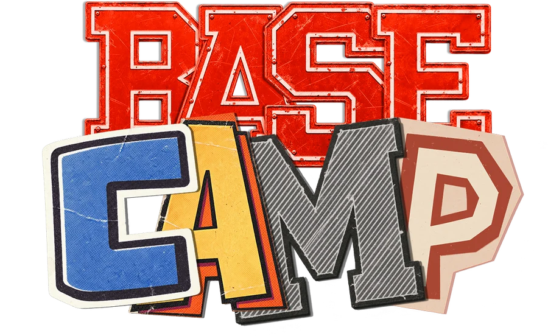
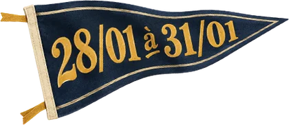
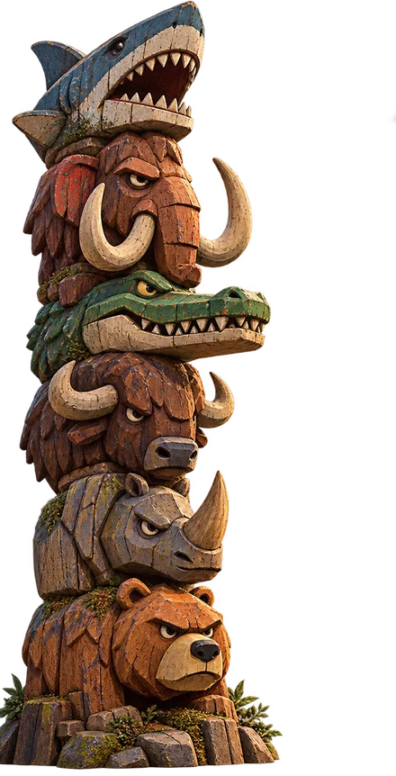
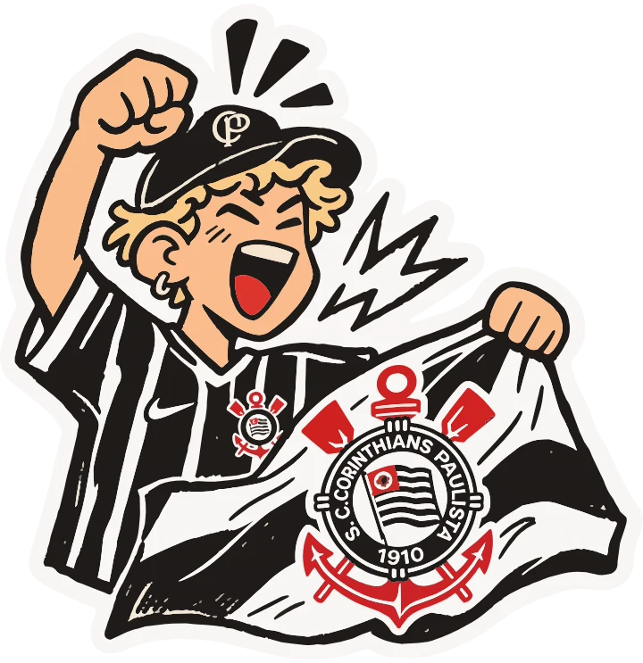
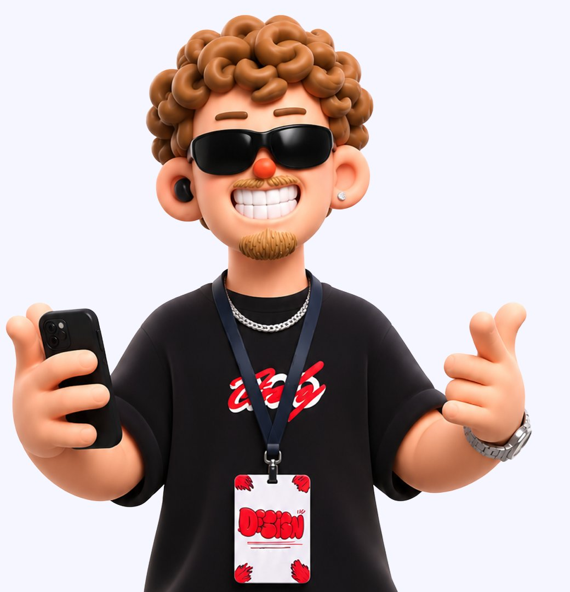
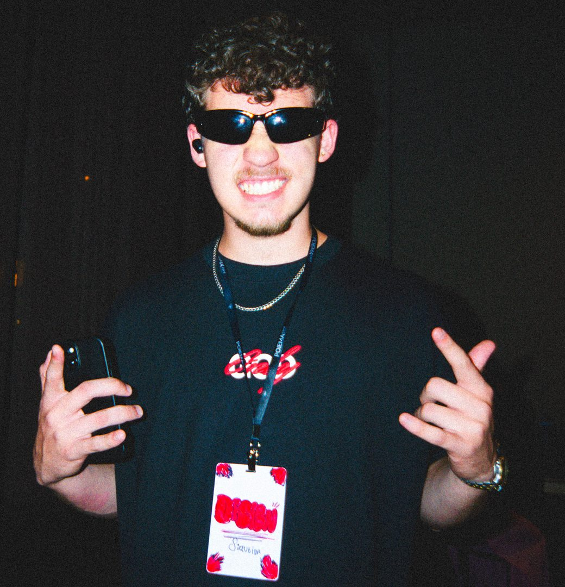
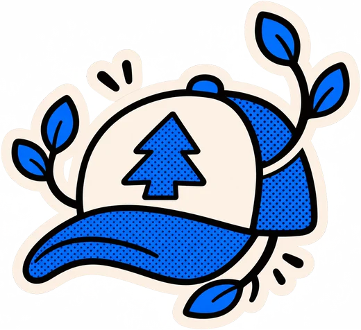
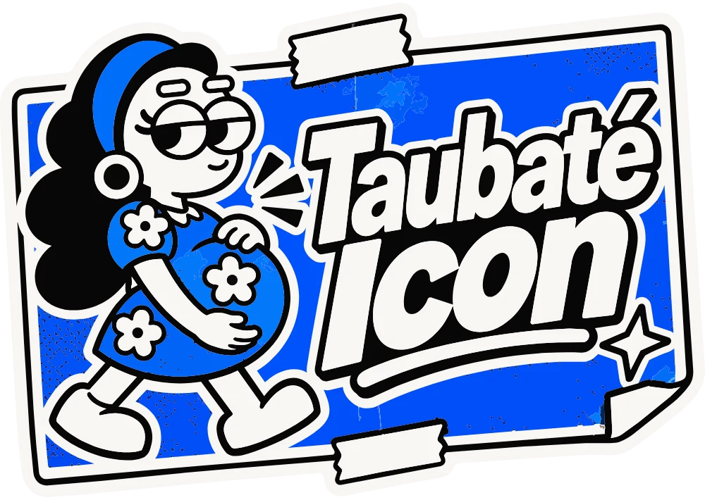
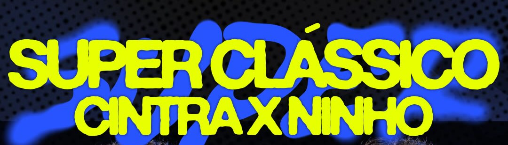

acampamento de jovens da Poiema Taubaté

Nostálgico, divertido e com cara de série da Disney, tipo Camp Rock e Gravity Falls. Primeiro o logo, depois o line-up dos pregadores em cartoon.
ver o projeto
Meu nome é Felippe Siqueira, sou de Taubaté, sou cristão e membro da Poiema Taubaté.
Desde 2024 trabalho como designer na Collab, a equipe criativa da Poiema, e é ali que eu coloco a mão na massa todo dia. Desenvolvo estampas pras coleções de roupa, crio identidades visuais do zero, do conceito às aplicações, e faço motion design pra dar vida e movimento às ideias. Além disso, rola de tudo um pouco: thumbnails, banners, peças pras redes e o que mais a demanda pedir.
O que eu mais curto no meu trabalho é que nada é só estética. Cada estampa, cada marca e cada animação carrega uma mensagem, e poder criar com propósito é o que me move.



Marcas que eu criei do zero, do conceito às aplicações.


Capas de carrossel e vinhetas de telão que eu animei. Clica pra ver grande.

Um jogo de fim de ano no estilo “amigos do Zico”, só que os craques eram dois caras da igreja. Era pra zoar: fiz line-up de cada jogador, arbitragem, narração e comentarista, e a gente cobriu o jogo ao vivo. Teve gente achando que era jogo de verdade.
Criei um uniforme pra cada time. No fim elas ficaram só no papel, mas os escudos e as cores guiaram toda a divulgação.
doisPê · estampas
Estampas que eu criei. Gira o anel e escolhe uma.
Feita pra lembrar que somos imagem e semelhança de Jesus Cristo, com elementos da Poiema: azulejos que lembram o “2 ou Mais”, álbum lançado junto com a conferência. Dentro deles estão a cultura de mesa, os frutos do Espírito e um vaso, pra lembrar que somos obras-primas, nome do último álbum da Poiema Music. Feita pra família toda.
Inspirada na música Maranata e feita a partir da letra. Nas costas: “O Deus que todos hão de ver, muito em breve voltará”. Na frente, num pequeno detalhe: “Rei dos reis, Senhor dos senhores”.
Uma composição de adesivos (stickers) que representam elementos, mensagens e símbolos ligados à identidade da igreja.
A mensagem “Jesus te ama” representada em Libras, unindo moda, inclusão e a essência do Evangelho.
Inspirada no uniforme da Seleção Brasileira de 2002. O número 07 é o ano de fundação da Poiema Church.
Inspirada na estética de uma capa de álbum do Bad Bunny: o chamado pra voltar ao princípio, fechar a porta do quarto e ter um tempo íntimo com Deus.
Celebra as riquezas e as belezas naturais do Brasil, com selos das paisagens brasileiras.
Likeness toca na camisa pra ver a história
Estampa, identidade visual, motion ou o que mais a demanda pedir. Me chama.
estampas
feito com propósito